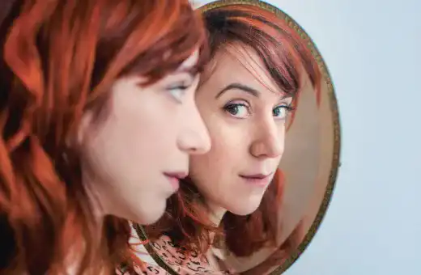

En effet, si on veut que les valeurs du féminisme se propagent aux générations futures, il faut les entretenir. On peut les diffuser sur les réseaux, dans les écoles mais aussi dans des lieux tel que les bibliothèques en ville ou en université. Il en va de même pour l’art. Tout le monde n’a pas forcément accès aux musées facilement. On peut donc montrer l’art à travers le web, les livres et dans l’éducation. Ainsi, les lieux tel que la BU sont des mines d’or de l’information pour les étudiants.
L’art et le féminisme au plus proche des jeunes
Les jeunes et la lecture, rapport difficile
L’exemple de Bagieu
C’est vrai. Mais qui a dit que la lecture se limitait à un assemblage de lignes sur des pages. Il y a de nombreux ouvrages qui abordent des thématiques précises voire complexes tel que le féminisme et qui sont très ludiques à lire. Prenons par exemple l’intégrale des Culottées de Pénélope Bagieu. Ce livre est ludique et simple à lire donc à destination de tous ceux qui s’y intéresseraient. Dans cet ouvrage, l’autrice raconte la vie de nombreuses femmes sous forme de bande dessinée. Coloré avec des bulles ou des encadrés textuels, ce livre est très attractif. A première vue, sous ses airs de livre pour enfant, il n’a pas l’air très informatif. Cependant, la vie de ces femmes y est très bien expliquée, de manière concise et précise.
Pénélope Bagieu a sélectionné des femmes qui l'ont marqué et a donc voulu les rassembler de ce livre. Elle a donc tout simplement voulu redonner une seconde vie à celles-ci en effectuant un travail de mémoire. Ce travail a donc permis de ne pas oublier ces femmes qui ont changé le monde à leur manière. Mais aussi à transmettre les valeurs qui leurs étaient chères. Cependant, ce n’est qu’une liste exhaustive parmi l’ensemble des femmes qui ont impacté le monde de leurs idées novatrices et révolutionnaires parfois.
Il n’y a pas qu’elle
En cherchant dans les nombreux livres que propose une bibliothèque universitaire, on peut tomber sur d’autres ouvrages. Des livres comme celui dénommé Le Féminisme de Anne-Charlotte Husson et Thomas Mathieu. Basé sur le même principe que le livre de Bagieu, cet ouvrage est un parfait exemple de l'art dans les livres. C’est-à-dire qu’il est composé de dessins avec des couleurs variées et vives mais également de petits textes sous forme de bulle. C’est un format style bande dessinée. Format adapté à des jeunes par exemple. Un moyen d’exprimer les choses plus ludiquement. Ce livre explique ce qu’est le féminisme dans sa globalité.
On peut également faire référence au livre de Sophie Carquain et Pauline Duhamel dénommé J’aimerais te parler d’elles qui suit le principe des deux autres livres mais avec une composition différente. Celui-ci combine page de texte, qui explique la vie d’une femme, et page illustrée sur un moment clés de la vie de celle-ci. Ce format aide donc à la compréhension du texte ainsi qu’à rendre plus attractif la lecture. Il est donc adapté à des enfants en bas âge par exemple mais peut tout aussi bien être lu par n’importe qui. Cet ouvrage aborde l’histoire de 50 femmes qui ont impacté le monde par leurs idées et l’audace dont elles ont fait preuve pour élever la voix.
L’expression artistique féministe d’aujourd’hui
Le monde change, l'art et le combat féministe également. Comment se transmet le féminisme aujourd'hui ?
Une histoire de l'art féministe
Une histoire riche en valeurs et en visuels artistiques, découvrez une artiste féministe du passé.
Vidéo
Découvrez une mise en situation du féminisme au court de cette vidéo